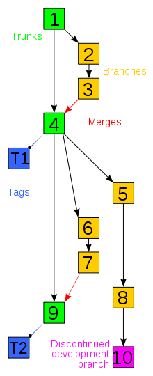

Git
Lesson the Third, on my journey to Learn Enough to Be Dangerous.

Git
Learn Enough Git to Be Dangerous, Lesson the Third
This is a bit of a strange one... I spent a while reading through various different wikipedia pages on version control, and most of it went: WOOSH makes gesture of hand flying over my head.
So what do I know?
Seat of my pants definition is that Git (/version control) provides a way to track changes in projects, and for multiple people (or one cautious person) to have multiple verions of that project which they can make changes to simultaneously...
That sort of makes sense, right?
I find visual imagery far more helpful in these kinds of situations, and this is the one that works for me:

BRANCHES, LOVELY BRANCHES. So you can checkout a branch, faff around a bit, change some stuff, probably add some tasty images of dragons. If that's all excellent and definitely what you wanted, you can then merge that back in with the master branch and changes are made on THAT branch. If however, you have realised dragons are completely inappropriate in this situation (preposterous), you can delete that branch, no harm done, and go back to your master branch where everything is sans draconis.
And that is my very basic understanding of Git.
Heading to my notes, I find some hastily scrawled bullet points on what I've learned about Git:
- Installing/ setting up a repo (via the command line)
- Initialising a repo (via the command line)
- The importance of a README (tells people what on Earth the project is and how to use/install etc.)
- Setting up repos on GitHub/Git Bucket
- Commit, push, repeat (am now slightly OCD about this)
- Branching and merging (dragons)
- ERRORS (and hopefully resolving them)
- COMMITMENT ISSUES
- Collaboration (clone, push, pull)
This was actually one of the hardest sections of the tutorials for me, particularly the collaboration exercises. This was because we had to collaborate with ourselves.
It was incredibly messy and so SO easy to fuck up.
Which I did, shockingly. I got myself into a right pickle, there were merge conflicts, atom windows everywhere, I'd completely lost track of what the hell I was doing and just floundering.